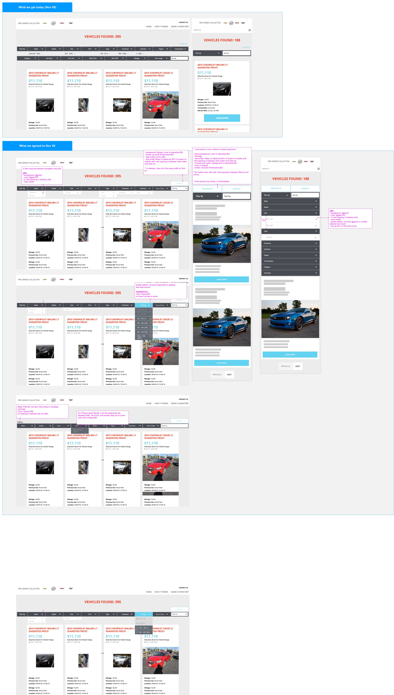
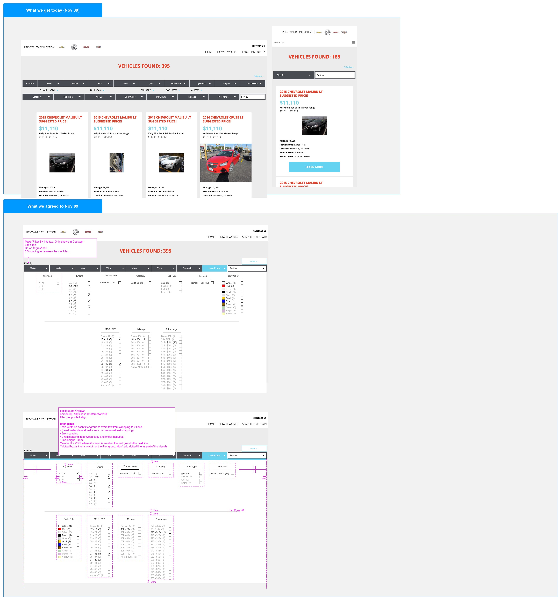
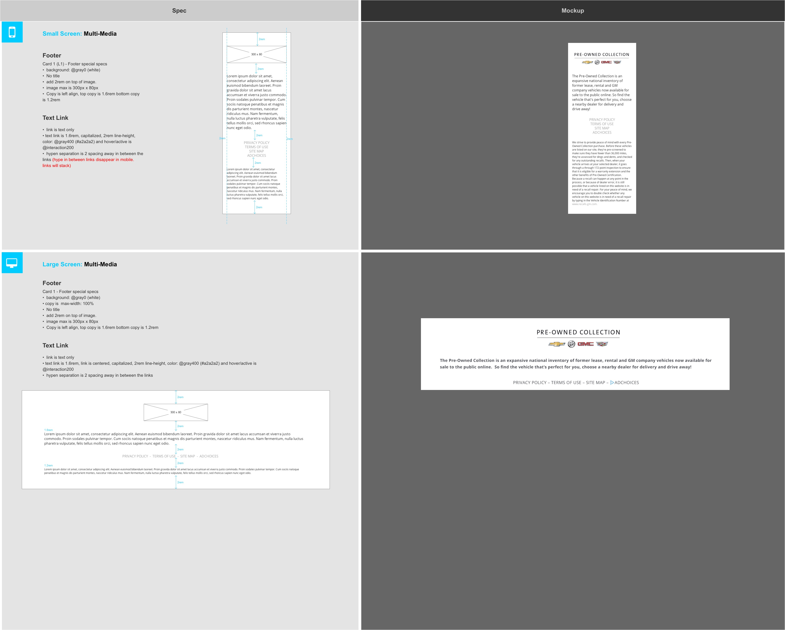
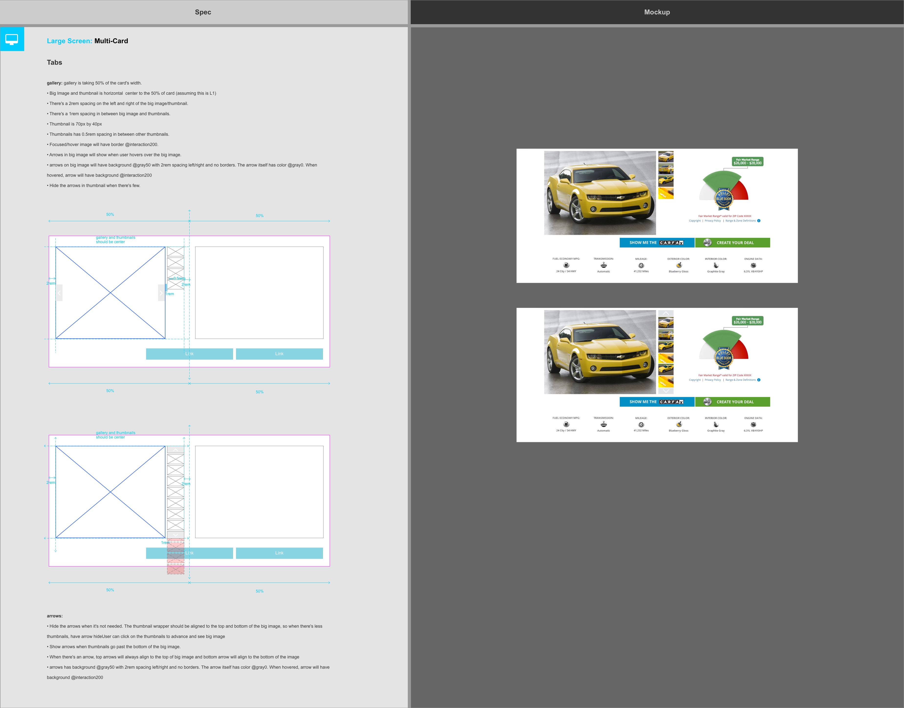
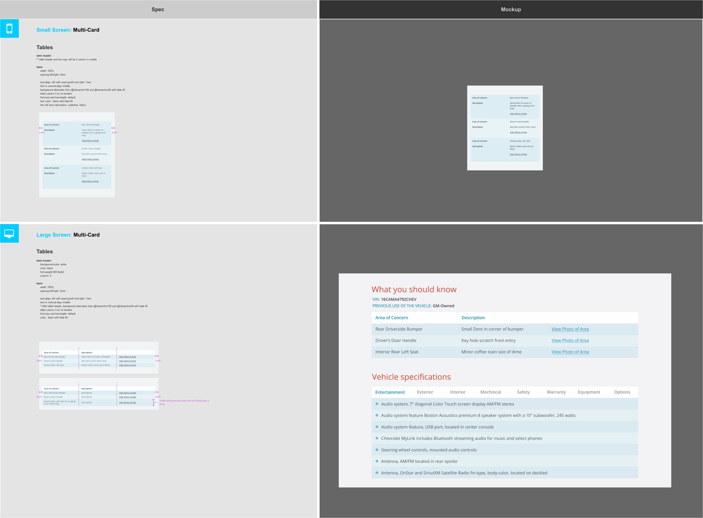
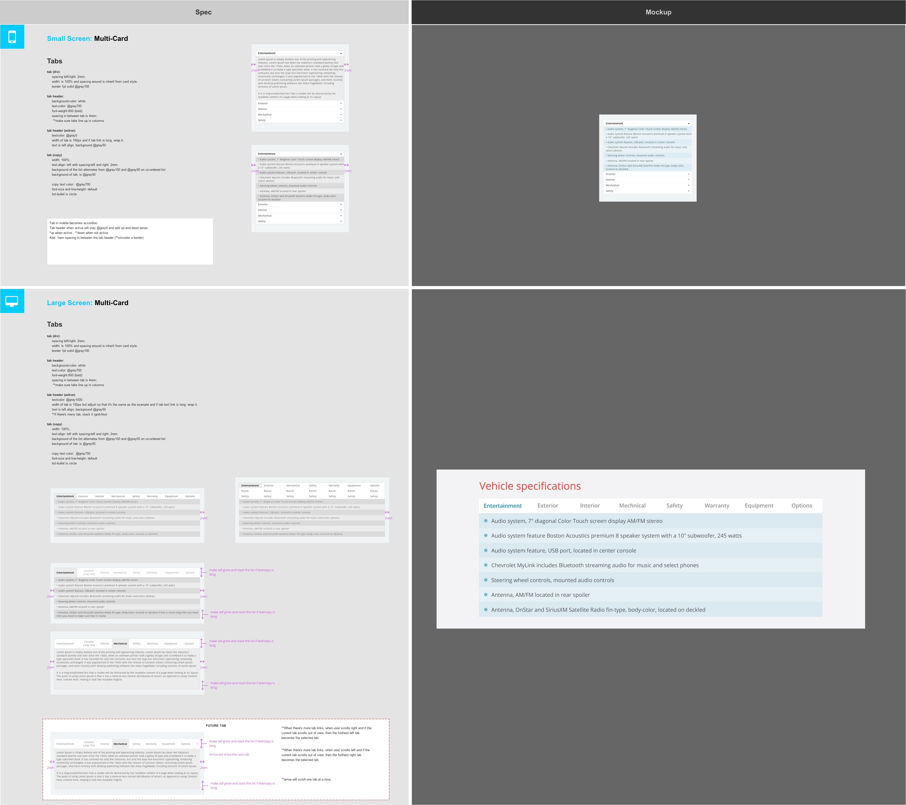

Factory Pre-owned Collection
Website
Note
My first project at CDK, teamed with developers, engineers, project managers and 3 UI/UX designers. NextGen was still something new and the team was figuring out how the concept would be applied to this website.
- While learning the concept and the project, I did the following:
- 1. Created Wireframes and design guidance for developers, as well as layout changes for various screen sizes.
- 2. Also created Hi-fidelity mocks along with the wireframes to provide visual guidance for clients and project managers
- 2. Researched, analyzed and proposed various ways to present gallery and filters while making sure that it works with their current system and concept.
- 3. Created Visual Prototypes for developer implementations
You can still find some of my work HERE
Tool
Adobe Photoshop, Axure, Wireframing, Redlining and Mocks.
     